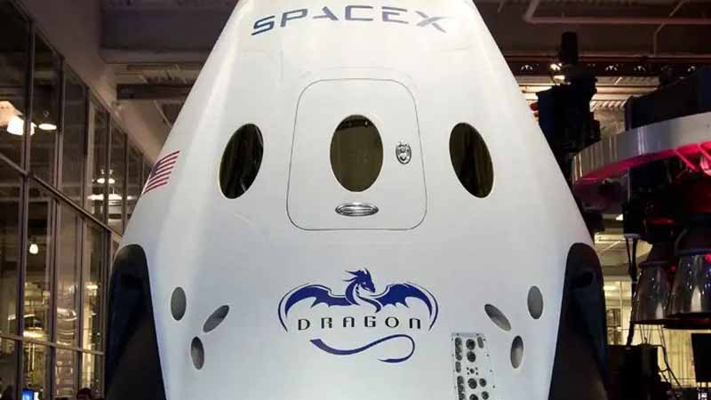
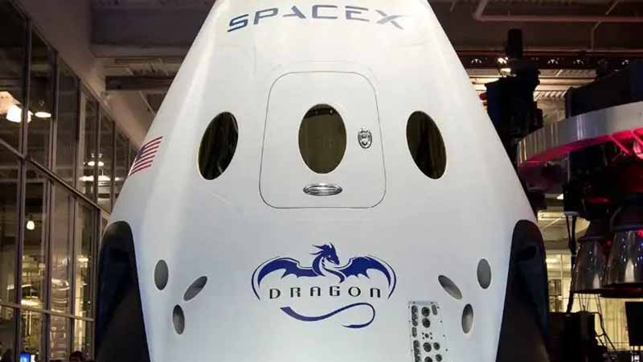

First Private Spacecraft to the Space Station
 


Experience Innovation: Introducing the latest iteration of the SpaceX Dragon capsule, a pinnacle of cutting-edge technology and design. Immerse yourself in the future of space travel with a spacecraft that redefines the boundaries of exploration.
Unmatched Versatility: The new Dragon capsule boasts unparalleled versatility, seamlessly transitioning between Earth and space. With its advanced features and state-of-the-art engineering, it's your ticket to a multitude of celestial destinations.
Revolutionary Design: Step aboard a spacecraft designed for the future. The Dragon capsule's sleek and modern aesthetics reflect SpaceX's commitment to pushing boundaries. Its aerodynamic design ensures optimal performance, making every journey a testament to engineering excellence.
Sustainability in Space: Embrace a new era of sustainable space travel. The Dragon capsule is equipped with environmentally conscious technologies, aligning with SpaceX's commitment to reducing the ecological footprint beyond Earth.
Safety First: Your safety is our top priority. The Dragon capsule incorporates the latest safety measures, advanced navigation systems, and failsafe mechanisms, providing peace of mind as you embark on extraordinary journeys beyond our planet.
Join the Adventure: Whether you're a space enthusiast, scientist, or aspiring astronaut, the SpaceX Dragon capsule invites you to be part of a new chapter in space exploration. Join us as we venture into the cosmos and redefine what's possible.
The future is now. Explore the stars with SpaceX Dragon — where innovation meets the infinite.